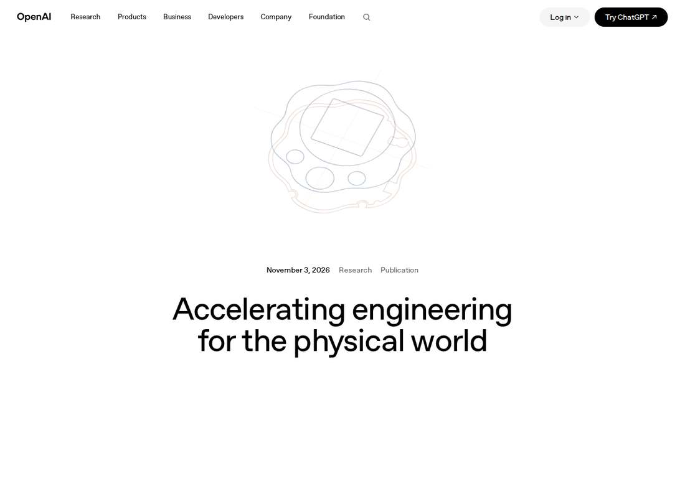

OpenAI Sends Astra Into Physical Engineering: a Device in a Week, With Humans Still Backstopping Production
OpenAI's official blog of November 3, 2026 says GPT-6 Astra designed a test device that can talk to Codex without humans directly editing the design output: two team members completed the design in under a week and a contract manufacturer built a small-batch prototype in under a month, but production still requires multiple review rounds and Astra did not consistently account for production constraints, tolerances and assembly details. Disclosed at the same time were an expanded physical-engineering collaboration with Chip Ganassi Racing and a new Mazda research collaboration on vehicle aerodynamics and crash safety. On BenchCAD 2.0, a newer internal model averaged 0.875 against GPT-6 Astra's 0.594 at its highest reasoning setting.

- 01THE ANNOUNCEMENT — OpenAI published its official blog on November 3, 2026, disclosing Astra's design of the test device, BenchCAD 2.0 scores, and the Chip Ganassi Racing and Mazda collaborations.
- 02THE CONFIRMATION — The full official blog and Unite.AI's same-day report were both opened and checked; core facts, partners and figures are consistent, with figures as self-reported by OpenAI.
- 03THE WATCHPOINT — Whether Mazda's drag-reduction options reach real vehicles, whether scan-to-drawing conversion reduces manual rework, and whether the next model generation needs fewer review rounds under manufacturing constraints.
WHAT HAPPENEDWhat Happened
OpenAI said in its official blog "Accelerating engineering for the physical world" on November 3, 2026 that it is pushing model capability into physical-product engineering — mechanical, electrical and end-to-end system design, from drawings and simulation setup to cross-discipline coordination — with the goal of giving engineers more time to explore ideas and improve designs.
The core experiment was a test device designed by GPT-6 Astra. Without team members directly editing the design output, Astra defined the functional requirements, designed the enclosure and internal support structures, selected electrical components and designed the printed circuit board including component placement and routing, designed the user interface, and generated the firmware and software integration needed to connect to Codex. Two team members completed the design as a side project in under a week, and a contract manufacturer produced a small-batch prototype in under a month.
OpenAI also acknowledged that the manufacturing gate has not been passed: reaching a manufacturable state still required multiple rounds of review and iteration, and Astra did not consistently account for the manufacturer's production constraints, tolerances and assembly details. Those gaps are being used to define what future models must improve.
On internal adoption and evaluation, OpenAI said model usage by its hardware and infrastructure teams has grown 23-fold by token count since February. On BenchCAD 2.0, a newer internal model averaged 0.875, while GPT-6 Astra scored 0.594 at its highest reasoning setting; the test asks models to reconstruct 3D parts and assemblies and identify circuit-board connections.
Two industry partnerships were disclosed at the same time. The Chip Ganassi Racing collaboration expands into physical engineering and prototyping, testing the conversion of 3D scans of existing parts into editable CAD models and 2D manufacturing drawings — particularly useful where original design files are missing — with team engineers reviewing accuracy and manufacturability. A new research collaboration with Mazda pairs OpenAI's research and frontier deployment engineering teams with Mazda's aerodynamics and crash-safety engineers, using airflow and structural-behavior simulation to explore new vehicle designs; Astra generates alternative front-end styling, runs airflow simulations and optimizes promising options to cut drag.
WHY IT MATTERSDesign can be done in one pass; production still needs humans as backstop
The honesty of this blog post lies in writing two things separately: a design in a week and a quick small-batch prototype prove generative capability, while production constraints, tolerances and assembly details still needing multiple rounds of human review mark the boundary of manufacturing capability. The distance between the two is exactly the distance from demo to product in engineering.
For readers, the implication is not to read prototype speed as manufacturing capability. The genuinely verifiable next step is not a prettier prototype, but whether Astra can pass review in one pass under the same class of manufacturing constraints — or whether the number of review rounds is shrinking.
WHY IT MATTERSBenchCAD scores look strong but test only the design segment
The 0.875 versus 0.594 gap looks large, but the test's scope needs to be clear: BenchCAD 2.0 measures reconstruction of 3D parts, assemblies and circuit-board connections — design-stage capability. It does not include cost, supply chain, reliability or production process. Extrapolating that score into a speed-up across the whole engineering chain is something the blog does not claim and should not be made to claim.
Likewise, the hardware team's 23-fold growth in token usage measures model consumption, not engineering output or hours saved. OpenAI's invitation to engineering firms and software vendors to collaborate signals that it positions this work as exploratory partnership, not a delivered solution.
SIGNAL JUDGMENT — ANALYSISThe signal is at the production boundary, not in prototype speed
Tokenta Signal's judgment: this blog post earns its place not because a device was built in a week, but because OpenAI wrote the production gaps into the same article. Prototype speed proves generative capability; review rounds, tolerances and assembly details are the hard gates of physical engineering. The verification points ahead are concrete: whether Mazda's drag-reduction options reach real vehicles, whether Chip Ganassi Racing's scan-to-drawing workflow reduces manual rework, and whether the next model generation needs fewer review rounds under the same manufacturing constraints. Without those, today's release counts as a capability demonstration, not an engineering delivery.
WHAT REMAINS UNCERTAINWhat Remains Uncertain
EVIDENCEEvidence

OpenAI's official blog of November 3, 2026 was opened and verified in full; Unite.AI's same-day report was opened and compared, with core facts, partners and figures consistent.
PRIMARY SOURCESPrimary Sources
- OpenAI official blog
https://openai.com/index/accelerating-engineering-for-the-physical-world/ - Unite.AI report
https://www.unite.ai/openai-tests-astra-on-physical-engineering-from-devices-to-vehicles/
RELATEDRelated Intelligence
- Canva Restructures 22% of Its Workforce as AI Serving Costs Bite: 1,271 Affected, Growth Forecast Cut to 20%
- GlobalFoundries Posts Record 31.4% Margin as AI Packaging Deals Stack Up: $2B TSMC Pact, $21B U.S.-Japan Fabs
- Lambda Pledges $33.1 Billion for Alabama AI Campus, Revealing Itself as Project Red Clay's Tenant
- Kimi K3.1 Pro Weights Land on Hugging Face, Closing Moonshot's November 4 Promise